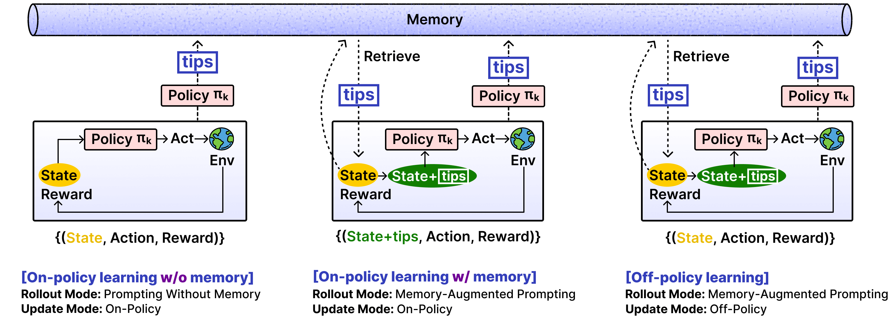
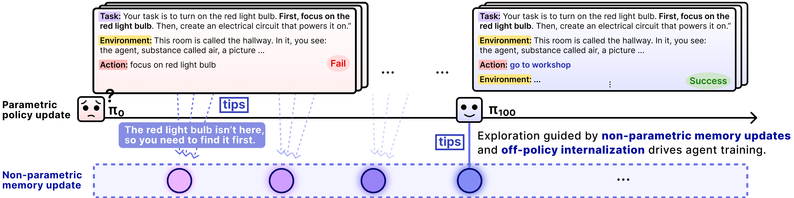
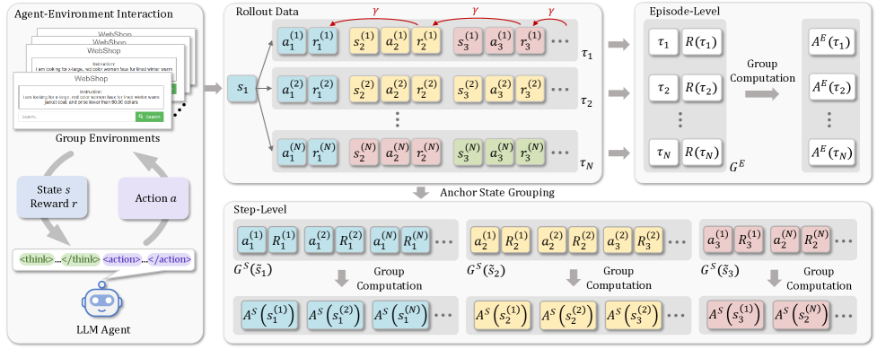
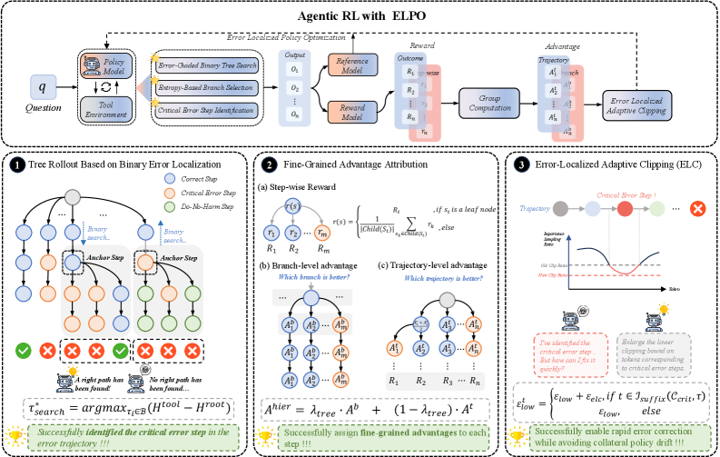
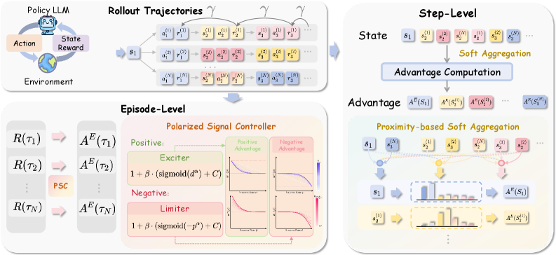

1.3 探索效率与信用分配¶
本节摘要
探索效率方面，EMPO² 通过记忆增强实现跨 episode 经验传递，LUFFY 引入 off-policy 专家示范突破 on-policy 局限。信用分配方面，GiGPO 利用锚点状态分组、ELPO 精确定位首个不可挽回错误、ProxMO 用语义邻近性做软聚合，从不同粒度解决长程归因难题。
探索效率：突破 On-Policy 局限¶
问题分析¶
LLM Agent 的探索面临独特困难：
- On-policy 局限（3 篇）: 模型只能从当前能力范围内采样，无法发现全新的策略模式
- 困难样本欠采样（3 篇）: 简单问题成功率高，主导训练数据；困难问题采不到正例
- 计算成本（5 篇）: Agent 任务的 rollout 涉及环境交互（API 调用、代码执行），比纯文本生成慢数倍
- 冷启动（2 篇）: 模型完全不会做的任务无法获得任何正奖励，RL 无法启动
EMPO² — 记忆增强探索¶
论文：EMPO²
Paper: Exploratory Memory-Augmented Optimization (arXiv: 2602.23008) | 机构: Microsoft | ICLR 2026

设计动机: 标准 on-policy RL 的根本问题是探索经验无法跨 episode 传递——Agent 在第 100 次尝试中犯了一个错误，第 101 次尝试时完全不记得这件事。人类之所以能高效探索，是因为我们有记忆：记住哪些方向行不通、哪些策略有效。EMPO² 的核心问题是：能否给 LLM Agent 一个类似的"探索记忆"？
核心方法: Hybrid on/off-policy 训练 + 自生成记忆系统：
- 失败轨迹总结: Agent 对失败的交互轨迹生成总结性 tips（"在这个场景下不应该先搜索，应该先分析已有信息"）
- 三种训练模式:
- On-policy without tips: 标准探索
- On-policy with tips: 带记忆提示的探索（参数学习 + 非参数记忆的联合）
- Off-policy with deleted tips: 将 tips 中的知识内化到参数中（去掉 tips 后仍能做到）
- 内在奖励: 鼓励发现新状态，避免重复已知的失败路径
这是一种 parametric（参数学习）+ non-parametric（外部记忆） 的双重更新机制。
关键成果: ScienceWorld +128.6%, WebShop +11.3%, OOD 场景平均 +136%。

面临的挑战: - Tips 生成质量取决于模型的自我反思能力，弱模型可能生成误导性的 tips - 记忆库的管理（增删、去重、优先级）在大规模场景下是工程问题 - Off-policy 训练阶段的 tips 删除策略（何时删、删哪些）缺乏理论指导 - +128.6% 的提升在特定 benchmark 上，泛化到其他 Agent 任务的效果待验证
LUFFY — 混合策略学习¶
论文：LUFFY
Paper: Learning under Off-Policy Guidance (arXiv: 2504.14945) | 机构: 字节跳动/港大
设计动机: 标准 GRPO 的 on-policy 采样意味着模型永远只能从"自己当前会的"里学。如果一个推理模式模型从未在预训练中见过，on-policy 采样几乎不可能碰到它。LUFFY 的问题是：能否用外部专家的 demonstrations 作为探索信号，引导模型学习超出自身能力的策略？
核心方法: Mixed-Policy GRPO，将 off-policy demonstrations 混入 on-policy rollouts。关键创新是加入 IS 正则化项，防止模型过度拟合 off-policy 数据而丢失 on-policy 学到的能力。
关键成果: OOD 场景 +6.2 分，证明模型确实学到了超出当前能力的推理模式。
面临的挑战: - 依赖高质量 off-policy demonstrations 的可获得性 - IS 正则化的强度需要精细调优，过强则 off-policy 信号被压制，过弱则过拟合 - 混合训练的 on/off-policy 比例是经验性的
其他方案概览¶
| 算法 | arXiv | 核心思路 | 效率提升 |
|---|---|---|---|
| TreePo | 2508.17445 | 前缀共享 + 早停剪枝的树结构 rollout | GPU 时间节省 22%-43% |
| LADDER | 2503.00735 | 模型自己递归生成 progressively easier variants，从简单问题获得正奖励 | 冷启动 1%→82% |
| SGE | 2603.02045 | 策略空间探索（用自然语言表达高级策略） | Google DeepMind |
| SSRL | 2508.10874 | 完全 offline，增强内部知识利用，不依赖外部搜索引擎 | 成本降至零 |
信用分配：长程归因的精细化¶
问题分析¶
信用分配是 Agentic RL 最具技术挑战的问题。考虑一个四轮交互：
- Agent 搜索了一条无关信息
- 基于错误信息做了一个决策
- 发现决策有误，重新搜索
- 基于正确信息给出正确答案 → 最终成功
Outcome Reward 只知道"成功了"，但无法区分：第 1 轮（无效搜索，应惩罚）、第 2 轮（错误决策，应惩罚）、第 3 轮（纠正能力，应奖励）、第 4 轮（正确输出，应奖励）的贡献。如果对所有轮次给相同的正 advantage，模型会同时强化有效和无效的行为。
📖 初学者补充：信用分配问题
信用分配问题在 RL 中由来已久（temporal credit assignment problem），但在 LLM Agent 场景中特别严重，因为 (1) 轨迹极长（数百 token / 数十轮交互），(2) 每轮行为之间有复杂依赖关系，(3) 没有像 Atari 游戏那样的中间分数信号。
GiGPO — 锚点状态分组¶
论文：GiGPO
Paper: Group-in-Group Policy Optimization for LLM Agent Training (arXiv: 2505.10978) | 机构: 南洋理工 | NeurIPS 2025

设计动机: GRPO 的 group-level advantage 是在同一问题的不同完整轨迹之间做比较。但在多步任务中，这太粗了——两条轨迹可能在前 3 步完全一样，只在第 4 步分叉。GiGPO 的问题是：能否利用这些"自然分叉点"做更细粒度的比较？
核心方法: Anchor State Grouping — 在同一任务的多条 rollout 轨迹中，识别自然重复出现的相同环境状态（anchor states）。将这些状态作为"锚点"，聚合来自不同轨迹但在同一状态下采取不同动作的经验，构建 step-level 的动作比较组。
直觉上：如果两条轨迹都到达了同一个中间状态 \(s\)，但一条选了动作 \(a_1\) 后成功、另一条选了 \(a_2\) 后失败，那么 \(a_1\) 在状态 \(s\) 下应该获得正 advantage、\(a_2\) 获得负 advantage。
关键创新: 不需要额外 rollout——利用已有采样中的自然重叠实现细粒度信用分配。
面临的挑战: - 需要不同轨迹之间有足够的状态重叠，在高度分支的任务中重叠可能很少 - "相同状态"的判定在连续文本空间中需要近似匹配，精确匹配几乎不可能 - 在轨迹空间很大时，锚点数量有限，信用分配的精度受限
ELPO — 错误定位与分层归因¶
论文：ELPO
Paper: Error-Localized Policy Optimization (arXiv: 2602.09598) | 机构: 阿里巴巴 | ICLR 2026

设计动机: 推理链中的错误往往有一个不可挽回的转折点——在这一步之前，推理方向是对的；从这一步开始，后续所有推理都建立在错误基础上。如果能精确定位这个"首个不可挽回的错误步骤"（first irrecoverable step），就能有针对性地训练模型避免这类错误。
核心方法: 1. 二分搜索定位: 在一条失败轨迹的推理链上，通过 rollout tree 和二分搜索定位 first irrecoverable step 2. 分层优势归因: 错误步骤之前的内容获得接近零的 advantage（方向正确但不完整）；错误步骤获得强负 advantage；错误步骤之后放宽 IS clipping 允许更强的纠正性更新
关键创新: 首次提出"first irrecoverable step"概念，将信用分配从统计平均转向精确定位。
面临的挑战: - 二分搜索需要在每个候选分割点做 rollout，计算开销显著 - "不可挽回"的定义可能是任务特定的——在某些任务中，即使早期出错也可以在后续纠正 - 对于并非"一步错、步步错"的任务（如多轮搜索，各轮相对独立），这个假设不成立
ProxMO — 语义邻近性软聚合¶
论文：ProxMO
Paper: Proximity-Based Multi-Turn Optimization (arXiv: 2602.19225) | 机构: 腾讯/港理工 | ICLR 2026

设计动机: GiGPO 的 anchor state grouping 使用离散匹配——状态要么完全匹配（分在同一组），要么不匹配（不分组）。但在文本空间中，两个状态可能语义非常接近但字面不同。ProxMO 的问题是：能否用连续的语义相似度替代离散匹配？
核心方法: - Step-level: 沿用 anchor state 思路，但通过连续语义加权（而非离散分组）导出 baseline。语义距离越近的状态对 baseline 贡献越大 - Episode-level: 感知问题难度，对不同难度的问题调整梯度强度（难题的成功/失败更有信息量）
关键创新: Plug-and-play，不需要修改模型架构或训练框架，可以直接叠加在 GRPO/DAPO 上。
面临的挑战: - 语义相似度的计算质量取决于 embedding 模型，嵌入质量直接影响 baseline 的准确性 - 加权方案中的温度参数需要调优 - 计算语义相似度带来的额外开销（虽然比 ELPO 的二分搜索小）
其他方案概览¶
| 算法 | arXiv | 核心思路 | 归因粒度 |
|---|---|---|---|
| Step-GRPO | 2503.12937 | 为每个推理步骤独立设计 Reasoning Accuracy Reward 和 Validity Reward | Step-level |
| ARPO | 2507.19849 | 熵自适应 rollout + 步骤级奖励，多轮工具交互中每个 action 获得精确反馈 | Step-level |
| VinePPO | 2410.01679 | 完全移除 Value network，用完整 trajectory return 的 MC 估计替代 | Token-level (无偏) |
| IGPO | 2510.14967 | 信息增益 = 模型对正确答案信心的边际变化（同时解决奖励稀疏） | Turn-level |